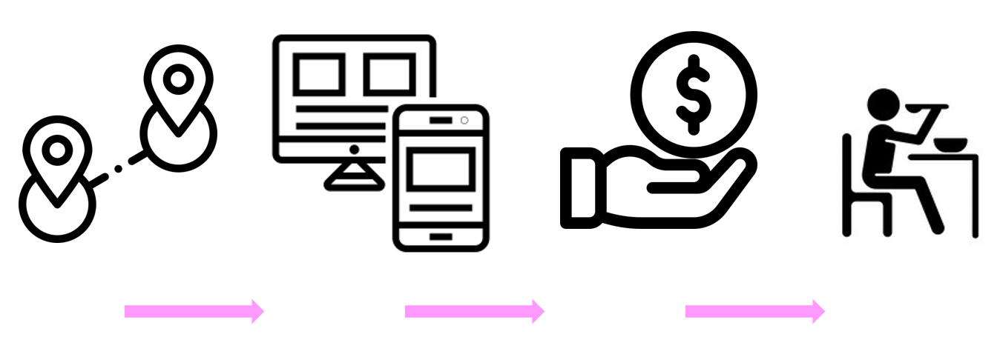

La coordinación general del Sistema Municipal DIF, dirige la iniciativa de
comedores comunitarios, que ofrecen alimentos por una cuota de
recuperación simbólica de 13 pesos.
Se cuentan con decenas de comedores en múltiples colonias que sirven
alrededor de 100 comidas al día. Se pueden consultar las ubicaciones
exactas en el mapa interactivo de está página.
Si deseas aprovechar de está iniciativa, puedes registrarte también en
está misma página con tus datos. De esta manera podrás ingresar a los
comedores más ágilmente.

¿Cómo puedes aprovechar de esta iniciativa?
- Asiste al comedor más cercano a ti.
- Descaga la aplicación móvil "Comedores Solidarios" y regístrate con tus datos, o bien, regístrate en esta misma página.
- Paga la cuota de 13 pesos (por comida).
- Disfruta de tus alimentos.
